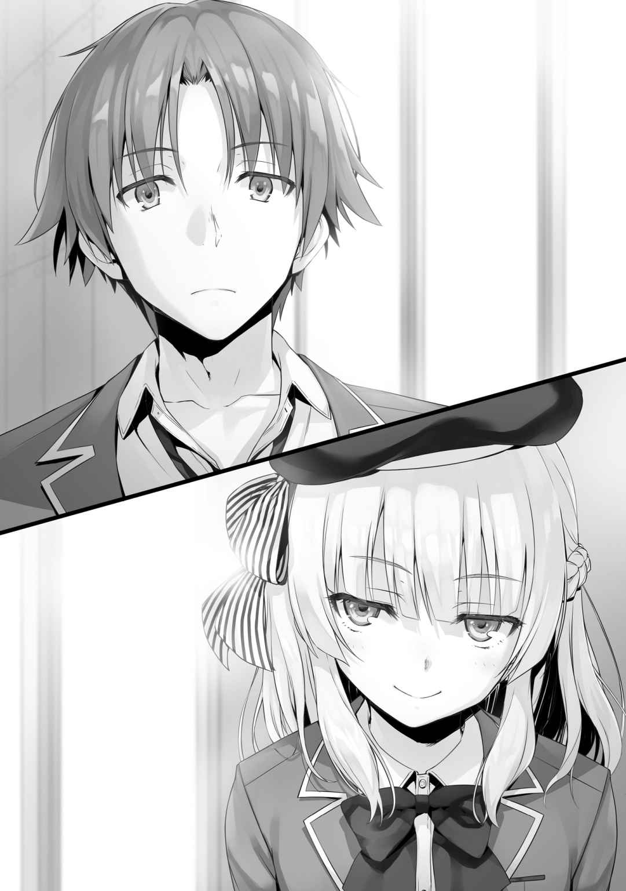

○救う難しさ
朝目覚めると、オレは携帯のチェックをする。
案の定寝ている間にも
追加試験が発表されたのは昨日だ、話題がそれ中心になるのも無理はない。
「不安にも
特に
もしもグループの中の誰かがクラスからの攻撃ターゲットとなった場合、非常に面倒なことになる。オレ自身がどこまで関与するかという部分も
脅迫に近い
どの道誰かがある程度のリスクを負わなければならないだろう。
メッセージをスクロールして戻していると、
『明日から３日間、グループの１人が早くに登校して情報を集めるようにしないか？』
『俺らは少数グループだからな、それは良いアイデアかも。啓誠の案に乗るぜ』
『良い手かも。どんな話が出てるか気になるしね』
『私も賛成』
『明日は私が早めに出るから、任せといて』
全員一致で、そういう結論に至っていた。オレのことにも触れられていたが、携帯の既読を付けるのが基本遅いため、事後
「なるほどな」
簡単に情報が降ってくるとは思えないが、何もしないよりはいい。
作戦としてはお手軽で、効果も期待が持てる。
これは昨日のやり取りだから、既に
この流れなら残りも他のヤツが早めに登校してくれそうだ、オレは何もしなくても大丈夫だろう。
３日後には投票だ。つまり遅くとも今日くらいには誰に批判票を集中させていくかの方針が固まっていくはず。とりあえず、綾小路グループが朝活で情報を手に入れられればラッキー。
一方で、こっちは恵から女子の動向、報告待ちをしつつ、男子の情報は
情報を早い段階で握っておくことは重要だしな。
１
それにしても、
気がつけばこの寮での生活も１年が経過していた。
「昔と同じ時間の流れとは思えないな」
楽しく感じるかそうでないかで、感覚としての時間が違う。
そんなことを昔学んだ時は、正直よく分かっていなかった。
オレにとって高校に入学するまでの時間は、１秒の狂いもなく等しかった。
でも今は違う。
明らかに、今までの何年にも匹敵するような速さで日々が過ぎ去っている。
あと２年で卒業する。
そう考えるだけで、あっという間にその日がやって来る気がするから不思議だ。
「おはよー
「ああ。おはよう
朝、寮を出るタイミングがほぼ同じだったのか、外に出るなり背後から一之瀬に声をかけられた。振り返って答える。
だが一之瀬は
「ん？」
こちらに近づくことなく、挨拶のポーズを取ったまま動かない。
「どうした」
そう声をかけると、
「やあ、えーっと、今日も寒いねー」
「そうだな」
話をするたび、白い
「誰かと一緒に登校する約束とかしてる？」
「いや全く。大体朝は一人だ」
「じゃあ……一緒してもいいかな？」
一之瀬からそう頼まれて、断れる生徒など男女共にいないだろう。
オレは
「…………」
「…………」
２人きりになった時は大体、一之瀬から話題を振ってくれるものだが、沈黙の中、互いの足音だけが耳に聞こえてくる。一之瀬はオレのやや後ろを歩いていた。
そこでオレは今回の試験に関して、一之瀬に話を振ってみることにした。
「今度の試験、一之瀬のＢクラスにとっては大変なものになるんじゃないか？」
他クラスを圧倒するほどのチームプレー、仲良しであるＢクラス。
その中から排除する生徒を決めなければならないのは、非常に心苦しいだろう。
「あ～……うん。そうだね、今までで一番難しい試験だと思ってる」
「だろうな」
影を落とす一之瀬の表情が、それを物語っていた。
クラスの中心人物である一之瀬だけは絶対に安全

だからこそ誰かを切らなければならないジャッジは
いっそ
もしかしたら一之瀬もそんな戦略を取っているのかも知れないが……。
「こんな厄介な試験でも、何とかするしかないじゃない？」
「まぁそうだけどな」
「……うん。何とかするしかないんだよ」
そう言って、一之瀬は隣に並んだ。
その横顔は薄く笑っている。
「まさか……おまえが
「え？ ヤだな。そんなこと誰にも言ってないよ？」
否定のような格好を取る一之瀬だが、その目には
それすらも選択肢に入れる覚悟、というような雰囲気。
「一応言っておくが、クラスメイトが
「私退学するなんて言ってないんだけど、
「顔に書いてある。それも視野に入れてるってな」
「そ、そう？」
慌てて確認しようとする
天然なのか意図的なのか。
今回は前者っぽいな。
「はあ……皆には内緒にしておいてね」
「誰かのために自分が
「ちょっと違うかな。私自身がリスクを負う戦いをしなきゃならない、そう思ってる」
自分自身がリスクを負う戦い、か。
つまり
「分からないな。せめてお前の手で、退学する生徒に
他の誰に送られるよりもマシだとしても、それはけして望む展開じゃないはずだ。
その生徒が笑って退学していく姿だけはどうしても想像できない。
「ここでこれ以上深い話はなしだよ。他の人に聞かれたい話でもないし、それに綾小路くんはＣクラスの生徒。どんな試験でも共存できない部分はどうしてもあるからね」
「確かにそうだな」
もしオレたちに出来ることがあれば、
一之瀬の持つ１票を手に入れることが出来れば、多少優位に試験を運ぶことが出来る。
とは言え一之瀬はそもそも、賞賛票が必要な生徒じゃない。かと言ってポイントで簡単に票を譲る
仮に１票買ったところで、それはお守り程度にしかならないしな。
「にしても、学校側も
誰だってこの試験を歓迎しているわけじゃない。
１年も終わりに差し掛かったこのタイミングでの強制退学。
「綾小路くんは大丈夫？」
「さあ、どうだろうな……。オレもクラスじゃ、それほど必要とされてる生徒じゃない」
「もし私で良ければ、協力できる余地はあるかも知れない」
「と言うと？」
「私の持つ他クラスへの賞賛票、綾小路くんに入れてもいいから」
こちらから切り出すことはないと思っていた、賞賛票の話が一之瀬から出た。
「１票だけじゃ、心もとないかもしれないけど……」
「ありがたい申し出だが遠慮しておく。オレなんかが
「そんなことないよ。むしろこの試験で、一番正当な１票になるとさえ思ってる。他クラスで褒めるべき人。そう、私を救ってくれた
何とも答えづらい言い方をされてしまったものだ。
「分かった。じゃあ、もしもの時はお願いするかも知れない」
「うん。覚えておくね」
そう言って
「おはよー
オレたちの後ろから、そんな声が聞こえてきた。
「おはようございます
「今日も元気ねー。ところで２人ってクラス別々だよね？ 結構仲いいんだ？」
「えっと、はい。仲の良い友達です……」
一之瀬はちょっと照れ臭そうに答えた。
「へ～？ 友達ねー」
もう少し普通に言った方が誤解は生みにくいけどな。
「まぁいいや。あのさ、ちょっと綾小路くん借りたいんだけど、いいかな？」
朝比奈はオレに近づくと、一之瀬を先に行かせての立ち話を希望してきた。
「分かりました。それじゃ綾小路くん、私先に行くねー」
特に嫌がることもなく、一之瀬は一度頭を下げ、朝比奈に従った。
「ごめんね帆波、またね」
「いえいえっ。じゃ、失礼します」
短い２人のやり取りの間に、変なものはない。
むしろしっかりした先輩と後輩の関係を築いているようだった。
「あの子良い子だよね。
「そうですね。１年の中でも一之瀬は男女共に人気者だと思います」
「もしかして君が、彼女のハートを射止めてたりして」
さっきのやや不自然な一之瀬の態度が、やはり引っかかったようだ。
「それはないですから」
同学年の一之瀬はともかく、朝比奈と一緒にいる時間は極力短くしたい。
「用件があるなら聞きます」
「ドライだなー。まぁいいや、君と帆波が楽しそうに話してたから、ちょっと耳に入れておきたくってさ」
さっきまで陽気に笑っていた朝比奈だったが、その表情から笑みが消えていく。
「１年生の試験のことは聞いた。誰か強制的に退学者を出すんでしょ？」
「そうみたいですね」
既に２年生の間でも話題になっているようだ。
「
「そうですね。皆、口にはしませんけど、Ｂクラスの行方は気にしてると思いますよ」
当たり障りのない表現だが、分かりやすくこちらの考えを伝える。
「じゃあさ、どうやって帆波はこの試験を戦うと思う？」
それは好奇心というよりも、試しているように捉えられる。
ここでの
「もし退学者を出さない方針で行くのであれば……。Ｂクラスは相当なプライベートポイントを
「うん正解。って、まぁ答えはそれしかないもんね」
退学者を出さない前提であれば、この結論には誰でも
ただ誰にもそれが実行できないだけ。
『何とかして２０００万ポイント』の『何とか』が極めて難しい。
「
「二つ返事で
「……正解」
この流れでそれ以外になることはないよな。
「先に聞きますけど、プライベートポイントを簡単に貸すなんてありえませんよね？」
いくら多くのプライベートポイントを保有するＢクラスでも、不足額は大きいはず。
何百万というポイントが足りないはずだ。
「もちろん無理無理。そりゃ数千、数万のポイントとかだったら話は別、検討する余地もあるけどさ。何十何百万なんてポイント誰にも出せやしないって」
朝比奈は迷わずそう答えた。
「３年生も私たち２年生も、この先に待つ特別試験に備えなきゃならない。プライベートポイントが生きてくるかどうか、最後の最後まで分からない状況じゃ、１年生に
そうだろうな。
だからこそ、
上級生から雀の涙ほどのプライベートポイントを得られたとしても、数万数十万というポイントを譲ってもらうことは不可能だろう。後で多めに返すという方法もあるが、卒業を迎える３年生には不可能だ。仮に２年生から借り受けという形で許諾をもらえたとしても、やはり大きな額はまず不可能と見ていい。
「期待に応えられる人間がいるとしたら、
「あいつ結構貯めこんでるからなー」
「それで？」
ここまでの話は、話の流れからすぐに見えてきた。
だが
「そう
「そうですね。一之瀬以外の誰かの退学を止めるための戦略でしょうし」
「だから私としては、
「厳しい条件でも突き付けられましたか。利子が
「あいつ、帆波にお金貸す条件に……自分との交際を突き付けてる」
「なるほど」
プライベートポイントを貸す代わりに交際の要求か。
普通ならありえないような条件。即断ってもおかしくない話。だがクラスを守るためなら、一之瀬がそれを
「いいんですか。そんなことオレに教えて」
「言ったでしょ。自分のクラスのためだって。雅が１年生に多額のプライベートポイントを貸せば、私たちは苦しくなるかも知れないし、帆波も仲間を守れる代わりに
「そうかも知れませんね。でもどうしてオレに相談してきたんですか。こっちはＣクラス。一之瀬とは敵対する関係にあるんですよ」
「分かんない。けど、君ならなんとかできるかなって思ってさ」
「それは
南雲の代わりに個人でポイントを捻出できるなら話も違ってくるが、そうもいかない。
「そりゃそうか。ライバル同士だもんねえ……」
一人でも生徒が欠けてくれる方がありがたい中で、ライバルのクラスを助けるのはあまりに馬鹿らしい。そもそも数百万ポイントとなれば、Ｃクラス全員が一致団結する必要がある。絶対に不可能だ。
「オレには何も出来ませんよ」
「大丈夫、別に何が出来なくたって
オレの背中をポンと
「とりあえず伝えたから。あとは君の判断にお任せ」
それだけ言い、朝比奈は立ち止まることなく学校へと向かっていった。
口ぶりや態度からしても、
「
らしくはないが、らしい戦略だな
確かにそれならクラスからの
まぁ、異性との交際となると即断するのは難しいよな。
協力してやれる問題なら良かったが、お金の問題はどうにもしようがない。
不足額は、恐らく４、５００万。援助できる
仲間を切る方が安上がりだが、一之瀬が交際の条件を
「あいつの性格からすれば……」
この先どうなるのか、それを想像するのは難しくない。
２
今回の試験は、クラス内で話し合うことそのものが難しい。
教室に漂う気配は悪く、ピリピリしているのが伝わってきた。
「おはよきよぽん」
「おはよう」
登校していた生徒たちの表情に
誰に
特別試験が終わるまでこの状態は続くだろう。
そして特別試験が終わってからも、しばらく続く。
『暗いよねー、教室の雰囲気』
そんなメッセージが、波瑠加から個人宛に送られてくる。
『何か変わったことは？』
『今のところなし。やっぱり警戒してるんじゃないかな～』
どこで聞かれているかも分からない教室だ。
不用意に特定の人物を名指しする発言はしないか。
『明日に期待ね』
『ああ』
そんな短めのやり取りをして、携帯を
オレたちは目立たず、クラスの邪魔もせず。嵐が過ぎ去るのを待つ。
そんな甘い考えをクラスメイトが許してくれれば、の話だが。
３
昼休みになると、オレは図書館へと足を運んでいた。
やはり今日もその生徒、
「こんにちは綾小路くん」
昼休みを迎えたばかりの図書館は人も少なく、オレの存在にはすぐに気付いたようだ。
その手には似たようなジャンルの本が握られていた。
「相変わらず本の虫だな」
「ここは、とても素晴らしい場所です」
ひよりはオレに軽く許可を取り隣に腰を下ろした。
互いに、静かに本を読む。
元来図書館を愛する生徒たちに、余計な会話は不要だ。
本を読む
それから約30分ほど。
昼休み終了間際まで、オレたちは一言も発さず本を読み続けた。
「そろそろ戻った方がいい時間だな」
「そうですね」
顔を上げ時計を確認し、２人で図書館を後にする。
「ところでひより。聞きたいことがある」
「なんでしょう？」
何を聞かれるのか分からず、不思議そうに顔を上げる。
「
「龍園くんの状況、ですか……。正直、良くないですね」
「やっぱり退学筆頭候補か」
「はい。クラスのほぼ全員が龍園くんへ
「龍園自身も、それを受け入れてるのか？」
「間違いないと思います。実は最近、放課後になると龍園くんはよく図書館にいらっしゃいます。なので、少しお
前にカフェで見かけたとき、図書館の本を読んでたからな。
ひよりと接触していてもおかしくないと思っていた。ここに来て正解だったな。
「そのことを、ひよりはどう考えてるんだ？」
「今回の試験は、悲しいことですが退学者は避けられません。ですから、自分も含め誰かが欠けてしまうことに関しては受け入れるつもりでいます。ですが、私はＤクラスがこれから上を目指して行くのであれば、
龍園には思うこともあるだろうが、その実力は認めているということだろう。
思えば龍園も、ひよりに対しては雑に扱っている様子はなかったな。
「悪いな、こんなことを聞いて。何となくＤクラスの様子が───」
そう言いかけて、オレは言葉に詰まった。
「いや───オレは多分、龍園が退学することを望んでないんだろうな」
自分自身、今日ここに足を運ぶ必要なんてなかった。
だが、どうしても龍園の状況を知りたいと思い、足を向けていた。
「お友達は、一人でも多い方がいいですからね」
「……そうだな」
少しだけ奇妙な感覚。龍園とは敵同士でしかなかったはずなのにな。
「あの……」
「ん？」
「これは、その、私なんかが言うことではないと思うのですが……」
少し話しにくそうにしながらも、ひよりが続ける。
「
「善処する」
ひよりの心配をありがたく受け取り、オレたちは教室へと戻った。
４
空気の悪さは放課後になった今も変わらなかった。
それを知ってか知らずか、隣人の
今回のような試験は一人で乗り越えることが難しい。一人でも多くの仲間を欲しいと考えるのが普通だ。しかし堀北はそんな素振りを一切見せない。
皮算用したとしても、確実に
となると……。
龍園に突っかかっていった堀北の先日の姿を思い出す。
何を欲し、何が欠けているのかを考えれば戦略は見えてくる。
どうやら、他の連中とは違う方法でこの試験を乗り越えようとしているみたいだな。
だが、それは簡単な道のりじゃない。
しかし実現できるのであれば、こちらとしては願ったり
オレは視線をクラスメイトたちへと一度向けた。
「珍しくアドバイスを求めてこないんだな。試験のことはいいのか？」
昨日の今日だが、オレは堀北に変化があるのか確認しておくことにした。
「あなたにアドバイスを求めても、素直に答えてもらえないもの」
「確かに」
堀北もその辺を理解し始めたらしい。
「それに……今回の試験は、
「他の大勢は、
「そうしたい人は、そうすればいい」
荷物をまとめ、堀北は席を立った。
「なら、おまえは何をするつもりなんだ？」
「私に出来ることよ」
それだけ言い残し堀北は帰っていく。
オレは少しだけ気にかかり堀北の後を追う。
「何？」
後を追ってきたことが不服だったのか、やや眉を寄せ
「おまえがしようとしてることが、ちょっと気になってな」
「普段は私に絡んで来ないのに今回に限ってはどうして？」
どうして、か。
それは単純に、堀北のやろうとしている戦略に期待を寄せているからだ。
実現してくれるのなら、こっちとしては全面的に応援したい。
と、直接ここで伝えるのはやめておく。
「グループを持ってないだろ。ピンチなら協力することも出来る」
「そういうこと。私の状況を一応は
「こっちとしては、人数が増える分には困らないからな」
「ありがたい申し出だけどお断りするわ。今私が求めているのはあなたじゃない」
既に考えは定まっているということだろう。
だが、まだ材料が
その不足を埋める『役目』に、オレは
「本当にあなたは……」
さっきよりも更に、強く睨まれる。
「なんだ」
「とにかく、私のことは放っておいて」
手厳しく伝えられ、オレは
これ以上
堀北を見送った後、オレは一度廊下の窓、その外を見つめた。
「今日のところは帰るかな」
「……少しいいかな、
すれ違うように、
タイミングからして、堀北と別れるのを待っていたのかもしれない。
「良かったら放課後、ちょっと付き合ってくれないかな。話があるんだ」
珍しい平田からの誘い。特に断る理由はないな。
オレが
張りつめた空気の中で一日を過ごす平田が、一番体力を消耗していそうだ。
当然、今回の試験に関することであることが
「じゃあ、４時半にケヤキモールの……そうだな。南口付近で合流できる？」
「分かった」
それだけ約束を交わす。
ここで話すようなことではないらしい。
次々と部活や帰宅を目指す生徒たちが通りかかっているしな。
今日も
５
教室を出て、そのまま玄関を目指す。
その途中で１年Ａクラス
「綾小路……」
警戒する神室が、
しかし坂柳はいつもと変わらない、余裕を持ったゆったりとした動き。
２人の対照的な仕草が少し面白かった。
「偶然ですね、綾小路くん」
「そうだな。そっちはＣクラスに何か用か？」
坂柳たちはＣクラスに足を向けているように思えた。
だが直接そうだとは答えず、坂柳は笑ってこちらの質問を流す。
「これからどちらに？」
「30分にケヤキモールで友達と合流予定だ」
「そうですか。学生生活を
オレに会うために？ いや、それはあまり考えにくい。
時刻はまだ４時10分を過ぎたところ。
ケヤキモールまで数分を要するとしても、10分以上の
「立ち話でいいのか？」
「ええ。ですがここでは少々人目につきます。少し移動しませんか？」
「そうだな」
オレとしても目立つことは極力したくない。
クラスメイトならいざしらず、坂柳は嫌でも注目を集める存在だからな。
坂柳もそれをわかっているからこそ、人気のない場所への移動を進めてきた。
ゆっくり歩く坂柳に合わせ、時間をかけて校舎を移動する。
「それにしても……
「まぁね。いつも冷静な
「それには理由があるんですよ」
「なに、あんた知ってるわけ？」
「これは
「停職って……確かここの理事長よね？ あんたの父親って」
そのことを
「詳しくは聞けていませんが、父にとって不利なモノがたくさん出てきたとか。私が知る父は、汚いことに手を染めることが出来るような人間ではありません。もちろん娘が知らないだけで、という可能性も排除しきれませんが……。何者かが、父を引きずり下ろすために様々な
それは神室にも聞かせているようで、実質オレに向けた言葉だっただろう。もし本当に坂柳の父親が潔白な存在であるなら、あの男が関与していても不思議じゃない。
オレが坂柳の父親に抱いた印象は、勘違いではないかも知れないな。
「とは言え、これは私たち生徒には一切関係のない話。単なる雑談です」
父親が停職に追い込まれていることは、坂柳にとって取るに足らない話らしい。
「でも、それと今回の試験とどう関係があるっていうの」
「誰かを退学させるために、
「誰かって……」
神室がオレを一度見た。そしてすぐ視線を坂柳に戻す。
「今まで気にしないようにしてきたけど、あんた、なんで綾小路に目をつけてるわけ？」
移動しながら、神室は坂柳の隣で聞く。
「あら、これまで気にしていなかったのですか？」
「……するわけないでしょ」
否定する
だが深くは追及せず神室の話に戻す。
「単純に昔から彼を知っているから、という理由では納得できませんか？」
気にする神室に対して、坂柳はそんな風に答えた。
これまで何も明かしていなかったことを考えると、かなりオープンな答えだ。
こちらの反応を
ま、実際のところ大して気にしていないわけだが。
「つまりこの学校で偶然に再会したってこと？ 薄い確率っぽいけど」
「ええ。その薄い確率です。ね、
「そうなのかもな」
面識は一度もなかったが、坂柳の表現はけして間違っていない。
確かに坂柳は一方的に、昔のオレを知っている。
「じゃあ、手ごわいわけ？ 悪いけど全くそんな風には見えないのよね」
坂柳が踏み込んできたことで、神室も踏み込み返した。
ある意味似た者同士なのかも知れない。
「あなたにしては
何度か直接、神室と接することで色々と思うことが出てきたのだろう。
坂柳にも抑えきれない好奇心みたいなものが出てきたのかもな。
「誰だって思うでしょ。あんたがそこまでこだわる相手なんてこれまでいなかったし」
「あなたは特に、その手のことには干渉しない無関心な人。だから私としても、遠慮なく綾小路くんの見張りを頼んでいたのですが……仕方のない人ですね」
こっちの様子を窺うためだと思っていたが、こういった神室の反応が面白くて意地悪な質問をぶつけているだけの可能性もあるな。
話し込んでいる内に目的の場所にたどり着く。
「ここなら、お話しする上で邪魔も入らないことでしょう」
確かに静かなものだ。放課後の特別棟は。
「さて。
ここまで同行させたのは、単なる話し相手が欲しかっただけなようだ。
「……あ、そ」
結局坂柳はオレに対して深く語ろうとせず、神室を先に帰らせることにしたようだ。
こうなることを分かっていたのか、神室は抵抗することなく階段を下りて行った。
「良かったのか？」
「ええ。
「別に」
ここで困る素振りを見せれば、それは１つの
わざわざ
「一応、私はあなたの敵として認識してもらえた、そう受け取ることにします」
オレの対応がどういう理由であるか、それは坂柳が考えるほどのものでもない。
「
移動に時間を費やしたため、待ち合わせまでそれほど余裕はない。
オレは本題を切り出すよう促した。
「私と綾小路くんの約束に関してです」
「確か次の試験で、オレとおまえは勝負するんだったな。つまり今回の試験だ」
「ええ、そのつもりでした。しかし……綾小路くんさえ良ければ、その話を次回に見送りたいんです。他クラス同士の
つまり今回を勝負の舞台には出来ないから、ノーカウントにしてくれという話だ。
「受けて頂けませんか？ このお話」
「好きに判断してくれていい」
すんなりとジャッジを下したオレに対して坂柳が丁寧にお礼を口にした。
「ありがとうございます。試験は試験だ、と言い切られたらどうしようかと思っていました。これで心置きなくＡクラスの内情に集中することが出来ます。ただ……」
「ただ？」
「停戦だからこそ、確実に信用してもらうためにあえて口にします。私はこの試験で、綾小路くんに対してマイナス要素、つまり
そう言って自らを
「万が一、私が何かしらＣクラスに関与し、綾小路くんの結果に損害を与えたなら……その時は私の負けで構いません。次戦の勝負も断って頂いて結構です」
「今回の試験で批判票の集中を受けたら、次戦も何もないけどな」
めでたくオレは退学になる。
「確かにそうですね。ともかく安心してください、とだけ申し上げておきます」
丁寧過ぎるほどの発言だが、オレから信用を得るために必要な行動だろう。
「オレとの戦いが始まる前に、手下に裏切られるような展開になったりしてな」
「フフ、ご冗談を」
Ａクラスの生徒、その
頭を失うような
「この試験が発表された段階で、私は誰を退学にさせるか決めました」
「早急に排除する人間を決めたか。正しい判断だな」
正当にクラスを力で支配している
「それを、いつ生徒たちに告知するつもりだ？」
「とっくに済ませてあります。ギリギリまで消す人間を告知しないとなれば、それなりに不安を覚えるものですから。先に伝えておけばクラスメイトも楽でしょう？」
退学を突きつけられた生徒にはたまったものじゃない。
だが、Ａクラスには荒れた様子が一切ない。
「どなたかお分かりになりますか？」
「さあ。皆目見当もつかないな」
流してはみたが目星はつく。
「
「
「彼は以前私と
城は落ち着きのある冷静な男だ。
恐らく試験内容を知った時点で、自らが
抵抗することなく、受け入れたということか。

「早々に
Ａクラスの中でも、優秀さで言えば
消すには
「私のお友達には彼を嫌う者も少なくない。保守的な考えに賛同できないのでしょう。それならば、退場して頂いた方が士気も上がるというもの」
兵力を切ることで、士気を高める狙いということらしい。
「話してよかったのか？ 誰がターゲットなのか」
「彼を守るために、
労力に見合った成果が得られることはないだろうな。
「Ｃクラスはどうなさるおつもりですか？」
「さぁな。オレは何も関与しない、クラスメイトの判断に任せるつもりだ」
「となると……単純に嫌われ者が
楽しそうに想像を
「Ｄクラスだけは、誰が考えるまでもなく
その部分だけには異論がない。
Ａクラスは特に龍園を助けるメリットがないからな。
城との間に結ばれた契約を切る意味でも退学させておきたいだろう。
「見えないのはＢクラスですね。あの仲良しクラスからの退学者が誰になるのかは、この試験一番のお楽しみです。あるいは
「悪いがそろそろ時間だ」
勝手に妄想するのは自由だが、一人の時にしてもらうことにしよう。
「そうですね。ひとまず、話は終わりです。次の試験は来週には始まることですし」
カツッと
坂柳のその視線が、
注視していなければ気づけない
たまたま視線が向いただけなのか意図的なのか、その判断はつかない。
「それでは勝負は予定通り１年最後の特別試験、その時に行いましょう。約束です」
オレは小さく
６
放課後の待ち合わせに使える店は、そう多くない。
大抵の場合ケヤキモール内にあるカフェで集合するが、今日は違う。
「今日は来てくれてありがとう」
「別に大したことじゃないさ。オレも
「そう言ってくれると
南口で合流した後、
「ごめん
「というと？」
「これから僕の部屋で話さない？ その方が落ち着けるかと思って」
「オレは別に、それでも大丈夫だ」
「ありがとう」
どうやら、今のモールはそんなに好ましい場所ではないようだな。
これから話すことを誰にも聞かれたくないらしい。
寮へと続く道を歩きながら、ぽつぽつと雑談が始まる。
「もうすぐ１年も終わりだね。この１年、綾小路くんは過ごしてみてどうだった？」
白い息を吐きながら、空を見上げる。
「無人島に行かされたり合宿させられたり、騒がしい１年だったかな」
「うん。確かに大変だったけど、僕は楽しかった。クラスメイトとの信頼関係も、入学当初から考えればよく構築できたと思っているんだ」
「そうだな。オレもそう思う」
その点は否定しない。クラスメイトの中には互いに嫌いあう者たちも少なからずいる。だが、敵の敵は味方という言葉が、実際にそうだろう。協力を強要される中、徐々に
「ほんと……この試験が、始まるまでは問題なかったんだけどね」
平田の笑顔に影が差す。
「やっぱりそっちの話か」
「うん。ごめんね、綾小路くんが望んでないのは十分に分かってるつもりなんだ」
オレはどんな試験に関しても、自分から積極的にかかわることはしない。
面白いもので、今回の試験では真逆。
堀北はオレに頼ってこず、平田がオレを頼ってきた。
もっとも最近は、堀北も成長してくれたってことだろう。
オレが協力しないことを悟ってくれたようで、その頻度も少しずつ下がり始めている。
「今回の試験、僕にはどうしても解決策が浮かばないんだ。何度考えても、考えてもね」
「何度もって……」
よく見れば平田の目の下にはクマができている。
昨夜は試験のことばかり考えていて、満足に眠ることもできなかったのか。
「
「え……？」
「いや、気にしないでくれ」
ここで不用意なことを言えば
今はそっとしておくことが最善の策だろう。
「もし、もしクラスを助ける方法があるのなら、教えてほしい」
どうやらオレの反応から、そこに答えが転がっていると勘違いされたようだ。
「プライベートポイントを２０００万
「僕も色々と計算してみたけど、到底届く金額じゃないね。昨日、部活の先輩たちにもそれとなく話をしてみた。だけど先輩たちもこれから、僕らとは違う特別試験が控えてる」
「手助けするためのポイントは出せない、か」
「うん……」
とはいえ、
「悪い、これ以上は何も思いつかない。だが思いついたら必ず平田にも伝える」
「そっか……うん、ありがとう」
この場ではこう返すのが精いっぱいだった。
懸命に笑顔を作って、平田がお礼を言う。
この特別試験は極めて難しく、極めて簡単な試験。
ちょっと視点を変えれば、何も迷うことはない。
だが平田には見えていない。
これが『不要な生徒を切り捨てるだけ』の試験だと。
オレや
もちろん『誰が』退学になるのかは分からないが『自分』でなければいいだけのこと。
しかし平田のようなタイプは違う。
『誰が』という部分をいつまでも決めきることができない。
だから出口の見えない迷宮に入り込んでしまっている。
「
「退学しないで済むなら、もちろんそれがいい。けど、それは難しい試験だ」
「……もちろん、そうだね。だけど、きっと何か方法が───」
「平田も分かってるから、夜も満足に眠れずにいたんじゃないのか？」
話を
「それは……」
寮の入り口に差し掛かったところで、オレたちは一度黙り込む。
ロビーで数人の生徒が雑談しているのが見えたからだ。
しかし問題は別のところにあった。
ロビーのソファーに座る、ある男と視線が合う。
「これはこれは。平田ボーイに綾小路ボーイじゃないか。奇遇だねえ」
「やぁ
寮の中に入ってすぐ、視線を向けてきたことから察したようだ。
「私が誰かと待ち合わせだったとしたら、気になるかな？」
質問に質問を返す高円寺。
「珍しい、とは思うかも知れないね」
「正直者は嫌いじゃないよ。だが残念ながら待ち合わせではないのさ」
それだけ答えるが、何をしていたかは答えない。
普段の高円寺はこんなところでくつろいでいるタイプじゃないからな。
「行こうか」
すると後ろから高円寺の言葉の矢が飛んできた。
「まぁ精々、知恵を振り絞って今回の試験も頑張ってくれたまえ」
「……君はいつも変わらないようだね、高円寺くん」
その態度が少し気にかかったのか、平田が聞く。
その指先は、ボタンに触れる直前で止められていた。
「変わるほどの試験じゃないからねえ」
「そうかな」
珍しく平田が、食って掛かった。
振り返り高円寺を見つめる。もちろん、
あくまでも冷静に穏やかに。
「君は変わるほどの試験じゃないと言ったけど、本当は誰よりも変わる必要があるんじゃないのかな。僕は心配しているんだ。もし、高円寺くんがクラスメイトたちのやり玉に挙げられることがあったら……そう思ってね」
それは平田なりの
協力して欲しいという思いを強く込めた言葉。
少しでも高円寺が協力する気になってくれれば、そう期待しただろう。
「心配無用さ。それを何とかするのがクラスの中心である君の役目だろう？」
あくまでも何もしない。そのスタンスを高円寺は崩さない。
「僕にだって出来ないことはあるよ。期待に答えられないかも知れない」
「そんなことはないさ」
自信のない平田に対し高円寺はグイグイと期待を寄せていく。
それが本心かそうでないのかは、この男からは感じることが出来ない。
立ち上がり、高円寺は近づいてくると、わざわざ平田の肩を軽く
「仲間同士で傷を
高円寺の残した言葉を聞いた瞬間、バチッとエレベーターのスイッチが押された。
「……
「ああ」
これまで
クラスメイトの中にゴミがいる。
そう
エレベーターの扉が閉まったところで、再び平田が口を開いた。
「ふう……。ごめんね。ちょっとらしくないところを見せちゃったね」
「別に気にしてないさ。高円寺の言い分に問題があった」
軽く苦笑いし、平田は小さく頭を下げた。
「君にも痛いところを突かれるね……。僕自身、退学者を出さないことは現実的じゃないと思った。だから上辺では言葉にしつつも、どこかで最初から
すぐに平田の部屋のあるフロアに
「どうぞ入って」
「お邪魔します……」
平田の部屋に入るのは初めてだな。室内の装飾はオレと似たような感じで、基本的にはシンプル、そして
殺風景だが平田らしい、整った室内だった。
「座って。コーヒーとかでいいかな？」
「悪いな」
「何も悪くないよ。僕がお願いしたことだから」
普段、オレは客の相手をすることが多いので少し新鮮な感じだった。
「さっきの続きなんだけど……」
コーヒーの用意をしながら、背中越しにオレへと声をかける。
「もう本当に、クラス全員が助かる方法はないのかな」
「どうかな。オレが思いついてないだけかも知れない」
先ほどと同じように答える。
分かっていても、つい平田は救いを求めてしまうのだろう。
だがフォローしたつもりだったが、それは逆効果だったようだ。
「君に思いつかないのなら、他に思いつく人なんていないと思うよ」
「
いつの間に、平田の中でオレの評価がここまで上がってしまったのか。
「
こちらの心を見透かすように平田が言った。
「それは本当に勘弁してくれ」
お湯が沸き平田がコーヒーを持ってくる。
「事実だよ。君は
何を言っても
言葉で否定しても、今の
ここは話題を少し変えた方が良さそうだ。そう思ったが平田もそれを察したらしい。
「誰かが退学にならなきゃいけない試験。こんなの理解しようと思ってもできるものじゃない。クラスメイトにいなくなっても構わない人なんて誰もいないのに」
「悩む気持ちは分からなくもないが、切り替えるしかないぞ。週末には答えが出るんだ」
「答え、か。
それは一見優しい瞳に見えるが、どこか別のものを含んでいるように見えた。
「別にいない」
「誰が欠けても、それを受け止めるしかないだろ」
「冷静だね。僕なんかよりも、よっぽどクラスのリーダーに向いているよ」
今まで率先してクラスを引き上げてきた平田だが、出てくる言葉は弱気
何一つ具体的な手を打つことができないでいる。
「僕はこの先、どうすればいいのかな。この試験にどう向き合えばいいんだろう」
アドバイスを送るなんておこがましいが、普段平田には助けられることも多い。
何とかして役にやってやりたいが……。
「オレの言葉は
「うん」
「全員を救う。そういう甘えは一度排除したうえでの話だ。平田は今『誰を切るか』という方向でずっと頭を悩ませてる。そして答えを出せないでいるよな」
悩んで、それでも最後には
「ならその方向を一度逆にしてみたらどうだ？『誰を切るか』じゃなく『誰を残すか』から考えていく」
「誰を残す、か……？ もちろん全員───」
「その全員に優先順位をつける。自分を含め全員を上から順に並べていく。もちろん、ほぼ同率で選べない生徒もいるかも知れない。それでも一度、順位を作ってみるべきだ。単純に自分が好きな生徒でも、クラスに
そうしてランキングを作ることで、最終的に最下位の生徒が生まれる。
「それは……でも……」
そう、簡単なことだ。
だが平田はその簡単な
生徒に順位をつけるという行為を
「順位をつけたって、僕の考えとクラスメイトの考えは必ずしも一致しないよ」
こうして言い訳をして逃げ続けている。
待っているのは、無防備なまま迎える特別試験当日だ。
「いいんだ。まず自分の中で結論を出すことから始めるべきだとオレは思う」
それが今、
その上で平田がどんなジャッジを下すかは、自身が決めること。
オレの買っているメーカーのものとは違うのか、やや酸味が強い気がした。
「そうだね、うん。そうかも知れない。僕は今逃げ出したい気持ちでいっぱいなんだ」
アドバイスを受け止め、懸命に理解しようとする平田。
すぐにはうまく行かないだろう。消化不良で吐き出したくなるかも知れない。
だが、それをぐっと喉元で
「ふう……うん。ありがとう」
絞りだした言葉で礼を言う平田。
今回の相談事も、とりあえず一段落だろうか。
「ちょっと
試験に関する話からガラッと変え、興味のあったことを聞いてみることにした。
「うん？ 何かな」
「
「意外な質問、だね。
ちょっと驚いて、そして困ったような顔をする平田。
オレが平田の彼女候補たちに興味を持ったのは、クラスメイトのみーちゃんのことが浮かんだからだ。学年末試験の前、平田のことが好きだと相談を受けたからか、どうなったのか気になっていた。もう行動は起こしたのだろうか。
「誰か、という部分は伏せるけど……うん、声をかけてくれた子はいたかな」
つまり既に女子からは告白を受け始めているということだ。
みーちゃんなのか、そうじゃないのか。
しかしモテる男は
「その子とは付き合ってるのか？」
「まさか。僕は今、誰かと付き合うつもりはないんだ」
きっぱりと言い切った。
「誰か好きな人がいる、とかでか？」
本命以外を受け入れるつもりないということなら話は分かる。
「誰かと付き合うことすら、今の僕には過ぎたことだと思っているんだ。資格がないよ」
「平田でそれなら、オレなんて夢のまた夢の話だな」
そもそも恋愛をするのに、資格なんて必要ない。
「僕はそんな出来た人間じゃない」
出来た人間ほど
出来ない人間ほど
結局そのあと、オレと
７
「悪いな
夜中の11時を回った頃、オレは一之瀬を自室に招き入れた。
普通なら警戒して断られても不思議はないが、一之瀬は何の抵抗も見せなかった。
「それは全然いいよ。でも
「どうしても一之瀬と話がしておきたくてな。とりあえず、良かったらベッドにでも座ってくれ。多分床は冷える」
ありがとう、と答え一之瀬はオレのベッドに腰を下ろした。
「なんかちょっと、ドキドキするかも……」
「え？」
「あぁううん、何でもないの。だけど電話にしなかったのはどうして？」
どうして、か。オレはケトルでお湯を沸かしながら白いカップを手にする。
「電話口じゃ分からないことも沢山あるからな。オレが今回確認したかったことは、その辺に関係してる」
「そうなんだ」
「回りくどい言い方はせずに聞こうと思うんだが、今回の試験どうするつもりなんだ？」
「今朝の話の続きみたいだね。退学者を出さずに試験を突破する方法を思案中……かな」
「具体的には何か浮かんでるのか？」
振り返り、様子を
もちろんこれは社交辞令みたいなもの。
互いに２０００万ポイントを使う以外に方法がないことは分かっている。
「うーん、残念ながらまだ……。もう時間もないから
言葉や態度から、隠すものの本質までは見えてこない。船上試験の時にも一之瀬の意外なポーカーフェイスに感心したことがあったが、なかなか
「
「協力って？」
身構えていなければ慌てそうな発言にも、一之瀬はいつもの様子で返す。
だが次の一言を受ければ、それも崩さざるを得なくなるだろう。
ケトルが沸き、ココアを作りそれを一之瀬に渡す。
「ありがとう」
「今回の追加試験は、今までとは違う。強制的に退学者を出さなければクリアにならない。だが、唯一例外の方法とされてるのは２０００万ポイントを
ココアに視線を落とした
「そっか、
隠し通せないと思ったのか、オレが
「ってことは、不足分を出す代わりの条件も聞いた？」
オレが小さく
「バカみたいな話でしょ？ 色んな意味でさ」
交際を条件にポイントを貸すということ。
その条件を真面目に考えていること。
それが色んな意味、ということだろう。
「一応、
「その辺は心配しないでいい」
「だけど、その話は綾小路くんには関係のないこと、だよね……？」
「そうだな」
Ｂクラスの判断であり、一之瀬の決めることだ。
「不足してる金額はいくらなんだ？」
「４００万と少し、ってところかな」
交際することで４００万ポイントが埋まり退学者を出さずに済む。
「破格の条件だな」
「うん。私なんかが南雲先輩と付き合ってポイントを借りられるなんて、ありえないことだよ。普通は、ポイントを払ってでもお願いするような立場だと思うし」
一之瀬との話を聞いていて、どう考えているのかが見えてきた。絶対に退学者をＢクラスからは出させない。そのためなら身を
「私たちＢクラスが全員助かる方法は、多分これしかない」
「そうか……」
ここでオレが何を言っても、一之瀬の助けになれるわけじゃない。
物理的なプライベートポイントのみが、今の一之瀬を助けることが出来る。
４００万にものぼるポイントは、オレが逆立ちしても用意できるものじゃないだろう。
「一応……心配してくれてた、のかな？」
「おこがましいヤツだと思うかも知れないけどな」
「そんなことないよ。
そう答えた一之瀬だったが、少しだけ表情が
「でも、ちょっと困っちゃったかも……。
冷めてきたココアをゆっくりと口元に運ぶ
「……綾小路くんは、どう思う？」
「今回の取引か？」
「うん。あなたの目から見て、私のやろうとしてることはどんな風に見える？」
一之瀬がこっちの目を捉えた。
オレはそれを正面から受け止め答える。
「クラスから退学者を出さないために、一之瀬だけに使える手段がある。プライベートポイントを
「軽蔑、しないんだね」
「軽蔑する必要もない。まぁ、クラスメイトを救うために２０００万ポイントを払う価値があるのかは、正直なところオレには判断がつかないけどな」
「……そっか」
また、ゆっくりとココアを口元に運ぶ一之瀬。
「ねえ綾小路くん」
一之瀬は、オレの目を見続けていた。
「ん？」
「綾小路くんって……ひょっとして
凄い人、と言われても反応に困る。
オレは
「何を思ってオレが凄い人なんだ？ 悪いが、自覚は全くないぞ」
「そうだとしたらもっと凄いよ。だって綾小路くんって……」
言いかけて言葉を止める。
「どうした？」
「ううん、何でもないの」
まるで自分でも、何を言いたいのか分かっていないようだった。
思考よりも先に口が動いていたかのように。
「……なんなんだろう……」
自分に問いかけるように、一之瀬は小さく
無理にでも呼び出し聞けて良かった。
一之瀬はどんなことがあってもＢクラスを守るために行動する。
それを改めて認識することが出来た。
悩みに悩んだ末、一之瀬は決断するだろう。
南雲